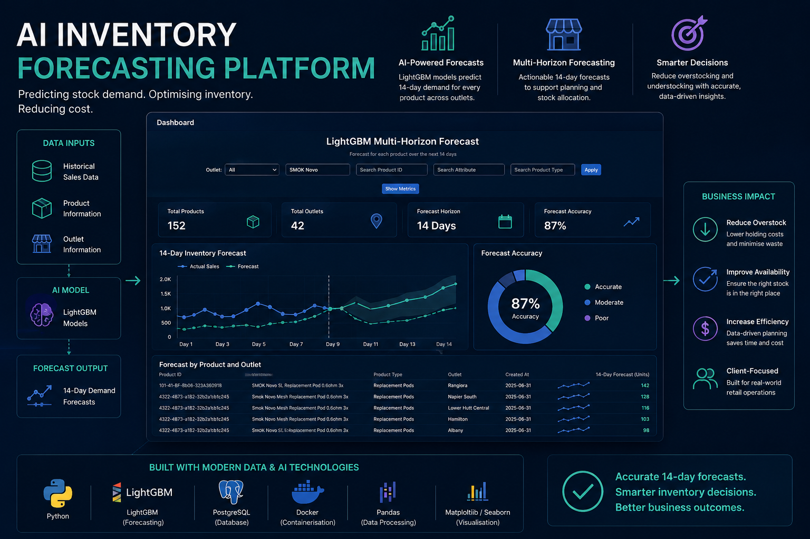

Client-focused university research and development project
AI Inventory Forecasting Platform
Led a five-person team in the development of an AI-powered inventory forecasting platform for a real client. The system used historical sales data and LightGBM models to produce 14-day stock forecasts across multiple retail outlets.
Role: Team Manager and Data Analyst
Outcome: Delivered a client-ready forecasting interface designed to support stock allocation and reduce overstocking and understocking risk.
Python
LightGBM
Pandas
Flask
Forecasting